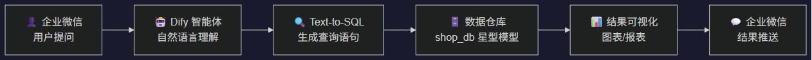
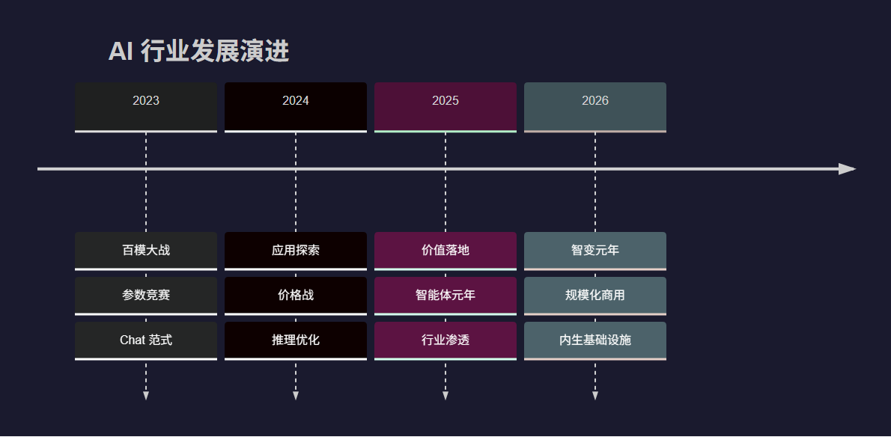
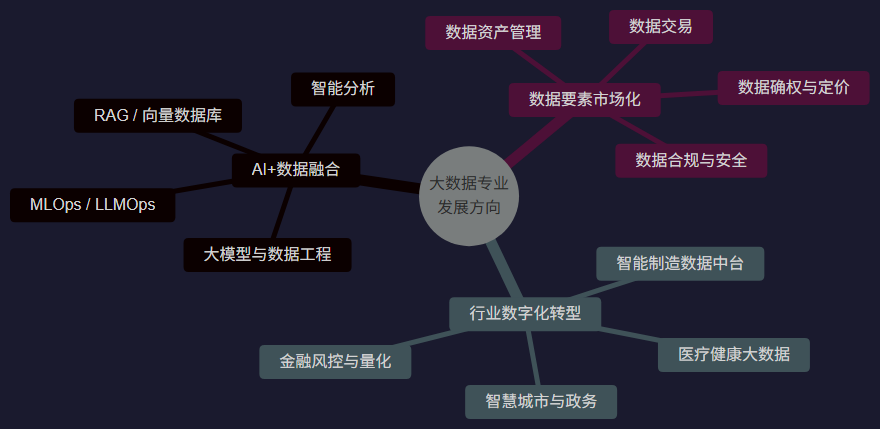
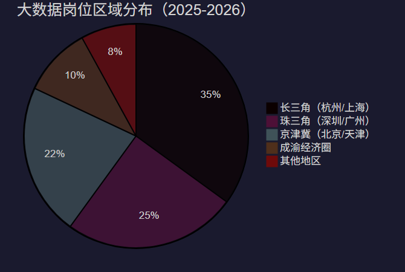
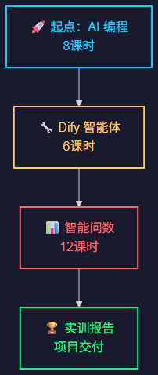

AI编程 × 智能体开发 × 智能问数
讲师：贺圣军 | 2026 年夏季学期 | 总计 26 课时
| 阶段 | 模块名称 | 课时 | 核心主题 |
|---|---|---|---|
| 一 | 🤖 AI 编程 | 8 | AI辅助编码、Prompt工程、AI工具链 |
| 二 | 🔧 Dify 工作流智能体 | 6 | 低代码AI应用、智能体编排、工作流设计 |
| 三 | 📊 智能问数 | 12 | Dify + 企业微信 + 数据仓库 |
📌 总计 26 课时 —— 从 AI 编程基础到企业级智能数据应用，由浅入深，循序渐进。
💡 核心理念：不是 AI 替你写代码，而是你驾驭 AI 写出更好的代码

🎯 终极目标：用自然语言对话的方式，让业务人员随时获取数据洞察
| 层级 | 技术组件 | 实训内容 |
|---|---|---|
| 接入层 | 企业微信 Bot API | 消息接收、鉴权、主动推送 |
| 智能层 | Dify 工作流 + LLM | 意图识别、NL2SQL、结果解读 |
| 数据层 | MySQL 数据仓库（shop_db） | 星型模型、维度建模、SQL 优化 |
| 展示层 | ECharts / 数据表格 | 可视化图表生成、移动端适配 |
📦 实训数据：
shop_db—— 完整电商数据仓库（8 张维度表 + 2 张事实表）
| 评分维度 | 权重 | 具体要求 |
|---|---|---|
| 项目完整性 | 25% | 三个模块均有可运行的交付物 |
| 技术文档 | 25% | 含架构设计、核心代码注释、问题记录 |
| 成果演示 | 25% | 现场 Demo 演示，功能完整可用 |
| 创新扩展 | 25% | 在基础要求之上有自主创新的功能 |
| 指标维度 | 2025年 | 2026年预测 |
|---|---|---|
| 🌍 全球 AI 市场规模 | ~7,576 亿美元 | ~9,000 亿美元 |
| 🇨🇳 中国 AI 核心产业规模 | 超 1.2 万亿元 | 维持近 30% 增速 |
| 🏢 中国 AI 企业数量 | 超 6,200 家 | 持续增长 |
| 👥 生成式 AI 用户规模 | 5.15 亿（普及率 36.5%） | 持续扩容 |
| ⚡ 日均 Token 调用量 | 突破 50 万亿 | 爆发式增长 |
📊 中国 AI 市场复合增长率预测：30% ~ 47%（不同机构模型）

| # | 趋势 | 核心要点 |
|---|---|---|
| 1 | 🤖 智能体时代来临 | 从"能聊天"到"能办事"，50% 中国 500 强将采用 AI Agent |
| 2 | 🎯 原生多模态融合 | 文本 + 图像 + 视频 + 音频统一建模 |
| 3 | 🧠 强逻辑推理突破 | 从统计关联到因果推断，深度思考能力跃升 |
| 4 | 🏭 AI 工业化渗透 | 制造业 AI 应用比例 9.6% → 47.5% |
| 5 | 🔌 AI 内生基础设施化 | 从"外挂工具"升级为企业核心基础设施 |
💡 行业共识：AI 不再是效率工具，而是生产要素本身
"未来 3 年，每家公司都是 AI 公司"
"智能体将替代 80% 的重复性脑力劳动"
"让每个人拥有数据分析师的能力"

| 类别 | 岗位 | 月薪参考 |
|---|---|---|
| 🔴 技术岗 | 大数据开发工程师 | 12K-25K |
| 🔴 技术岗 | 数据分析师 / BI 工程师 | 10K-20K |
| 🔴 技术岗 | AI 算法工程师 / 训练师 | 15K-45K |
| 🔴 技术岗 | 大数据架构师（高级） | 35K-100K+ |
| 🟡 复合岗 | 数据产品经理 | 20K-35K |
| 🟡 复合岗 | 数据治理专家 | 18K-30K |
| 🟡 复合岗 | 数据安全工程师 | 20K-35K |
| 🟢 行业岗 | 金融风控分析师 | 15K-30K |
| 🟢 行业岗 | 工业数据分析师 | 12K-25K |
🎯 最紧缺："AI + 数据" 双栖能力人才，供需比可达 1:8
🎯 本课程实训目标：让你同时具备这四种能力！
| 指标 | 数据 |
|---|---|
| 🇨🇳 数字经济人才缺口 | 超 3,000 万 |
| 📊 大数据人才缺口（3-5年） | 150-200 万 |
| 📈 基础数据分析人才缺口 | 1,400 万 |
| 🎓 应届生起薪（核心岗） | 12K-20K/月 |
| 📈 3年后薪资中位数 | 25K-35K/月 |
| 🏢 全国开设数据相关专业点 | 超 1,500 个 |
💡 黄金窗口期：大数据 + AI 复合人才正处于供不应求的历史机遇期


| 阶段 | 你将成为... |
|---|---|
| 🤖 AI 编程 | 能驾驭 AI 工具的高效开发者 |
| 🔧 智能体 | 能搭建企业级 AI 应用的架构师 |
| 📊 智能问数 | 能用对话驱动数据决策的复合型人才 |
"AI 不会淘汰你，但会用 AI 的人会。"
—— 这不是一句口号，而是正在发生的现实。
| 准备项 | 说明 |
|---|---|
| 🛠️ 开发环境 | 安装 VS Code / Cursor，注册 GitHub 账号 |
| 🐍 Python 基础 | 回顾 Python 基础语法、虚拟环境管理 |
| 🗄️ SQL 基础 | 复习 SELECT / JOIN / GROUP BY |
| 🤖 AI 工具 | 注册 DeepSeek / 豆包 / Kimi 账号体验 |
| 📖 前置阅读 | 了解 Dify 平台基本概念 |
💬 提问环节：关于课程安排、考核方式、技术方向，有什么想了解的？欢迎在课堂上随时提出。